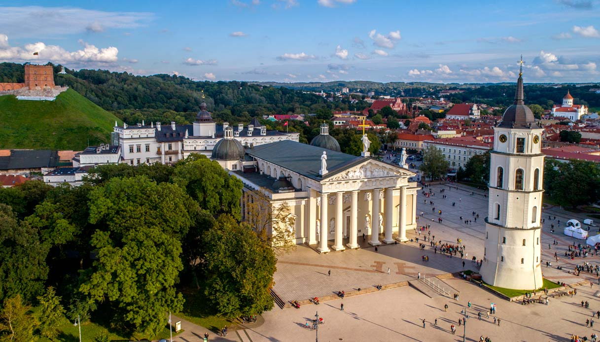
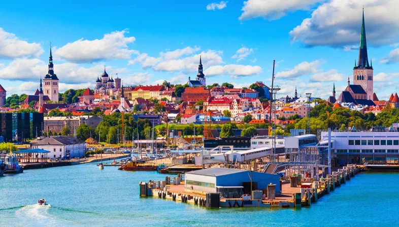
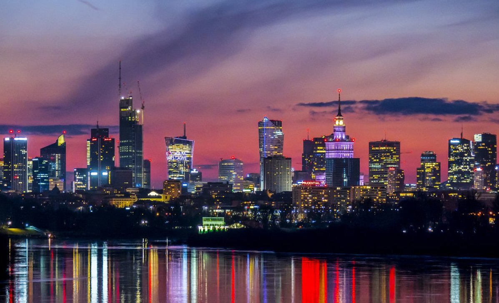
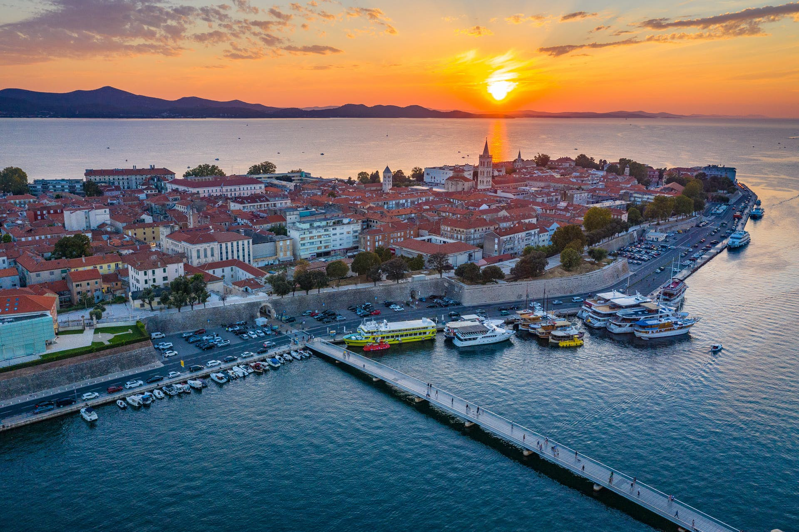
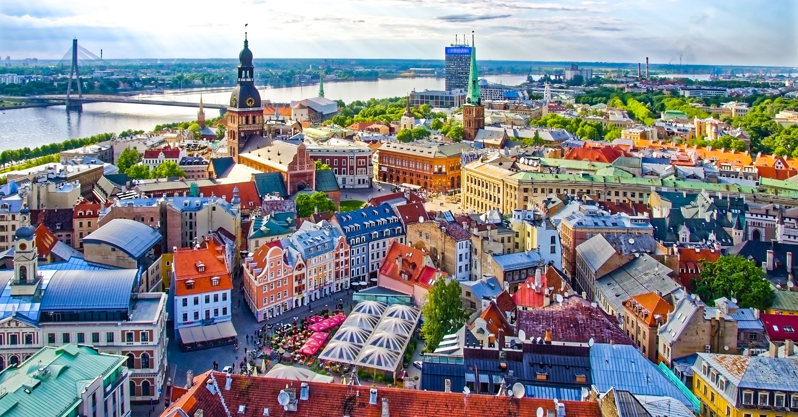

1 Vilnius, Lituania
Vilnius si trova nel sud est della Lituania, alla confluenza dei fiumi Vilnia e Neris. La posizione
periferica rispetto al resto del paese è conseguenza della storia e del cambiamento dei confini lituani nel
corso dei secoli. Un tempo era al centro non solo culturale, ma pure geografico del Granducato di Lituania.
In origine, occupava anche una posizione centrale nell'area occupata dagli insediamenti lituani, anche se la
popolazione della città è stata multietnica per la maggior parte della sua storia.
Ricerca miglior prezzo...

2Tallinn, Estonia
Situata sulla costa settentrionale del paese ed affacciata sul Mar Baltico, è divisa da 80 chilometri in
linea d'aria di mare da Helsinki, quest'ultima situata più a nord. Tallinn, inoltre, è la città più popolosa
e maggiore centro economico e commerciale del paese estone.
Capitale europea della cultura per l'anno 2011, assieme alla città finlandese di Turku, la Città Vecchia
medioevale, antico porto anseatico, è divenuta patrimonio dell'umanità dell'UNESCO nel 1997.
Ricerca miglior prezzo...

3 Varsavia, Polonia
Varsavia è l'estesa capitale della Polonia (pronuncia in polacco: "Varshàva"). La lunga e turbolenta storia
della città si riflette nella sua
architettura, che va dalle chiese gotiche e dai palazzi neoclassici fino ai blocchi di epoca sovietica e ai
grattacieli moderni. Il centro storico è stato restaurato dopo i pesanti danni subiti durante la seconda
guerra mondiale. Nel cuore della città si trova la piazza del mercato, con edifici in tinte pastello e caffè
con i tavolini all’aperto. Al centro, la statua della Sirenetta di Varsavia è considerata il simbolo della
città.
Ricerca miglior prezzo...

4Zara, Croazia
Zara, città croata sulla costa della Dalmazia (pronuncia in croato: "Zadàr"), è rinomata per le rovine
romane e veneziane che fanno parte
del suo centro storico peninsulare. Lungo le mura della città sono numerose le porte veneziane. Intorno al
foro di epoca romana si trova il convento di Santa Maria dell'XI secolo, con opere d'arte religiose che
risalgono all'VIII secolo. Qui si trova anche la grande cattedrale del XII secolo di Sant'Anastasia, oltre
alla chiesa pre-romanica del IX secolo di San Donato, dalla forma rotonda.
Ricerca miglior prezzo...

5Riga, Lettonia
Riga, capitale della Lettonia (pronuncia in lettone: "Rìiga"), si affaccia sul Mar Baltico alla foce del
fiume Daugava. Grazie ai tanti
musei e alle sale da concerto, è considerata un polo culturale. La città è conosciuta anche per i suoi
edifici in legno, l'architettura in stile Art Nouveau e il centro storico di epoca medievale. In quest'area,
chiusa al traffico, numerosi sono i negozi e i ristoranti. I bar e i locali notturni si trovano invece
nell'affollata piazza
Ricerca miglior prezzo...
